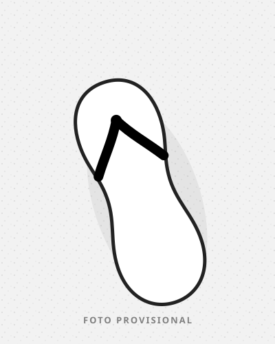

Asesoría digital
Te ayudamos a decidir qué tecnología necesita tu negocio (y cuál no), a ordenar procesos y a dar los primeros pasos sin perderte en la jerga.
estudio creativo digital · islas canarias
Asesoría digital, software, diseño y eventos, con la huella de las islas en cada proyecto.

Te ayudamos a decidir qué tecnología necesita tu negocio (y cuál no), a ordenar procesos y a dar los primeros pasos sin perderte en la jerga.
Productos y herramientas a medida, web y con inteligencia artificial, pensados para durar y para que los controles tú.
Identidad, interfaces y piezas digitales con criterio: claras, cuidadas y con carácter propio.
Eventos en línea o que combinan lo presencial y lo digital, de la idea a la retransmisión.
La conserjería digital para hoteles: un asistente que responde a los huéspedes al instante (horarios, instalaciones, servicios) usando solo la información verificada del propio hotel.
Su modelo de decisión es ultrarrápido y se ejecuta en local, en dispositivos de bajo coste instalados en el propio establecimiento: cada hotel controla su asistente y sus datos, de principio a fin.
Para muchas personas las raíces marcan parte de su vida, y para el estudio no iba a ser menos, ya que tiene personalidad propia. En la fundación del estudio se marcó un principio claro: el desarrollo desde Canarias, aportando valor a las islas y dejando la huella «chola» en todos nuestros trabajos. Y más importante aún, es un alegato a todas esas madres que son capaces de darle nombres a objetos que hijos e hijas siempre recordarán.
Sanchesque viene del uso coloquial y deformado de la marca Sancheski en las islas, aunque según la Academia Canaria de la Lengua se corresponde con el homónimo de la marca. Es común escuchar «sanchesque» de residentes de cierta edad en lugar del nombre correctamente pronunciado. Esta empresa fue la primera en vender «skates» (monopatines, para los rigurosos con el idioma) en España, allá por los años 60, lo que hizo que popularmente se conociera a éstos con el nombre de su marca.
Entonces, ¿el logotipo es un skate?
Se podría decir que es un skatechola: la chola es un sello de identidad de las islas, pero el skate le da nombre al estudio. Así que no puede ser ni una ni otro: es lo que le da carácter.
Aprovechar el talento increíble que existe en las islas (o que ha emigrado fuera) para desarrollar productos que se puedan exportar desde Canarias.
Dar a conocer el potencial que existe en las islas para generar valor.
Generar sinergias en el tejido productivo digital canario.
Cuéntanos qué tienes entre manos. Respondemos rápido y con ideas concretas: